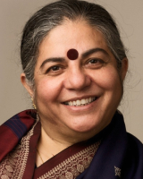
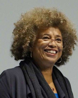
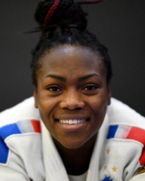

Galerie
Les visages du féminisme
Vous trouverez sur cette page des portraits de féministe par catégorie !
Les grandes figures françaises
Olympe de Gouges
Femme de lettres française. Elle est ensuite femme politique et écrit la Déclaration des droits de la femme et de la citoyenne, en 1791. Elle se bat également pour le droit de vote des femmes.
Simone de Beauvoir
Théoricienne et philosophe majeure du féminisme. Elle se fait connaître grâce à son livre «Le Deuxième Sexe» publié en 1949. Simone de Beauvoir a participé au mouvement de libération des femmes dans les années 1970.
Simone Veil
Elle est ministre de la Santé sous la présidence de Valéry Giscard d'Estaing. Elle permet la publication de la loi du 17 janvier 1975 (loi Veil), relative à l'interruption volontaire de grossesse, donc qui encadre une dépénalisation de l'avortement en France.
Figures internationales par catégorie
Écologie
Vandana Shiva
Inde - Née en 1952.
Grande figure de l'écoféminisme.
Éducation
Angela Davis
États-Unis - Née en 1952.
Militante féministe et communiste, elle défend les droits de l’Homme.
Elle est également écrivaine et professeure de philosophie.
Sport
Clarisse Agbégnénou
France - Née en 1992.
Judoka française ayant participé aux Jeux Olympiques d’été de 2020.
Elle remporte deux médailles d’or.
Art
Marina Abramović
Serbie - Née en 1946.
C’est une artiste qui fait partie du courant artistique de l’art corporel. On peut la définir comme féministe.
Science
June Almeida
Royaume-Uni - Née en 1930 et décédée en 2007.
Elle découvre et élabore grâce à une technique ingénieuse en microscopie électronique la première description d’un coronavirus.
Médecine
Helen Taussig

États-Unis - Née en 1898 et décédée en 1986.
Grande pédiatre américaine, elle réussit à guérir la tétralogie de Fallot (maladie de l’enfant bleue) chez les nourrissons.
Politique
Alexandria Ocasio-Cortez
États-Unis - Née en 1989.
Représentante des Etats-Unis depuis 2019. Grande figure nationale et internationale, très active sur Twitter notamment.
Juridique
Gisèle Halimi

Tunisie / France - Née en 1927 et décédée en 2020.
Tunisienne d’origine, Gisèle Halimi a travaillé en France en tant qu’avocate. Elle est également militante féministe.